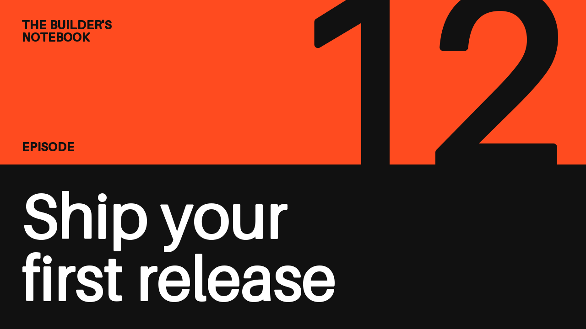
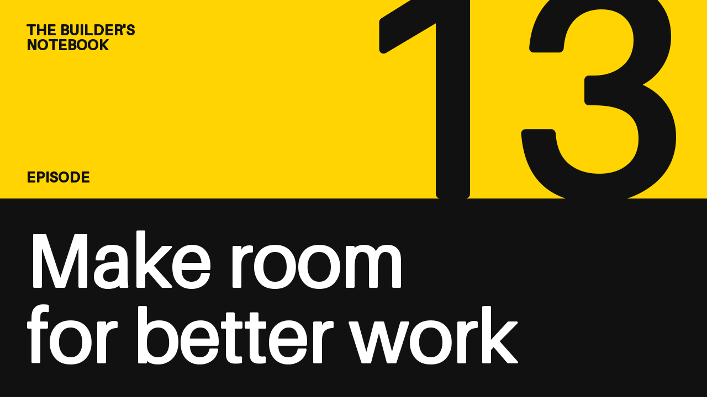
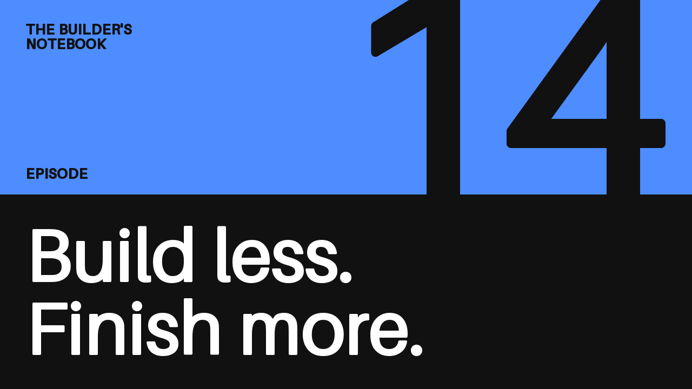

첫 카드 렌더링
에피소드 카드 레이아웃을 만든 뒤, 내용을 바꿔 카드 세 장을 출력해 봅니다. 제목을 바꾸면 같은 레이아웃으로 나만의 카드도 만들 수 있습니다.



1. quickthumb 설치
Python 3.11 이상이 필요합니다. Python 환경에서 다음 명령을 실행합니다.
먼저 환경을 만들어야 한다면 설치 안내를 따른 뒤 여기로 돌아오세요. 이 예제는 기본 패키지와 내장 글꼴만 사용합니다. 설치 후 글꼴이나 사진을 내려받거나 선택 렌더러를 설치할 필요가 없습니다.
2. 레이아웃 저장 및 실행
quickthumb 체크아웃 밖의 작업 디렉터리에 다음 코드를 episode_cards.py로 저장합니다.
from quickthumb import Canvas, Stroke
INK = "#111111"
WHITE = "#FFFFFF"
def episode_card(episode, title, accent):
return (
Canvas(1280, 720)
.background(color=INK)
.shape("rectangle", position=(0, 0), width=1280, height=360, color=accent)
# The numeral stands on the band and crops at the top edge.
.text(
str(episode),
size=540,
color=INK,
# A stroke in the text color thickens the regular-weight built-in font.
effects=[Stroke(width=8, color=INK)],
position=(1240, 360),
align=("right", "bottom"),
letter_spacing=-10,
)
.text(
"THE BUILDER'S\nNOTEBOOK",
size=26,
color=INK,
effects=[Stroke(width=1, color=INK)],
position=(48, 44),
letter_spacing=1,
)
.text(
"EPISODE",
size=26,
color=INK,
effects=[Stroke(width=1, color=INK)],
position=(48, 330),
align=("left", "bottom"),
letter_spacing=1,
)
.text(
title,
size=136,
color=WHITE,
effects=[Stroke(width=2, color=WHITE)],
position=(48, 688),
align=("left", "bottom"),
max_width=1184,
max_height=290,
auto_scale=True,
balance_lines=True,
line_height=1.04,
)
)
episodes = [
(12, "Ship your first release", "#FF4B1F"),
(13, "Make room for better work", "#FFD400"),
(14, "Build less. Finish more.", "#4D8DFF"),
]
for episode, title, accent in episodes:
episode_card(episode, title, accent).render(f"episode-{episode}.png")
같은 디렉터리에서 실행합니다.
같은 디렉터리의 episode-12.png, episode-13.png, episode-14.png를 여세요.
각 이미지는 1280 × 720 크기입니다. 스크립트는 실행할 때마다 같은 파일 이름으로 기록하며, 이미 존재하는 파일을 덮어씁니다.
3. 다음 카드 만들기
함수는 수정하지 않고 episodes에 다음 행을 추가하세요.
스크립트를 다시 실행하고 episode-15.png를 여세요.
같은 레이아웃을 재사용하면서 에피소드 번호, 제목, 색상만 바꾼 것입니다.
제목은 max_width 안에서 줄바꿈됩니다. auto_scale=True를 사용하면 지정한 너비와 높이에 맞도록 글자가 작아집니다.
여러 카드를 일괄 제작하기 전에 실제로 사용할 가장 긴 제목으로 확인하세요.
디자인 조정
episode_card() 안에서 색상, 숫자나 제목 크기, 위치를 한 번 바꾸면 모든 카드에 적용됩니다.
레이어는 추가한 순서대로 그려집니다. 원하는 서체를 쓰려면 각 .text() 호출에 font="/path/to/your-font.ttf"와 같은 로컬 글꼴 경로를 추가하세요.
글꼴 자체가 충분히 굵다면 Stroke 효과를 제거하세요.
레이아웃을 확장할 때는 canvas.diagnose()로 레이어가 캔버스를 벗어났는지, 대비가 너무 낮지는 않은지 확인하세요. 이 예제는 숫자를 일부러 잘라 배치했으므로 off-canvas가 한 건 보고됩니다. 자세한 검사 항목과 한계는 진단에 있습니다. 진단을 통과했더라도 디자인이 보기 좋은지는 직접 확인해야 합니다.